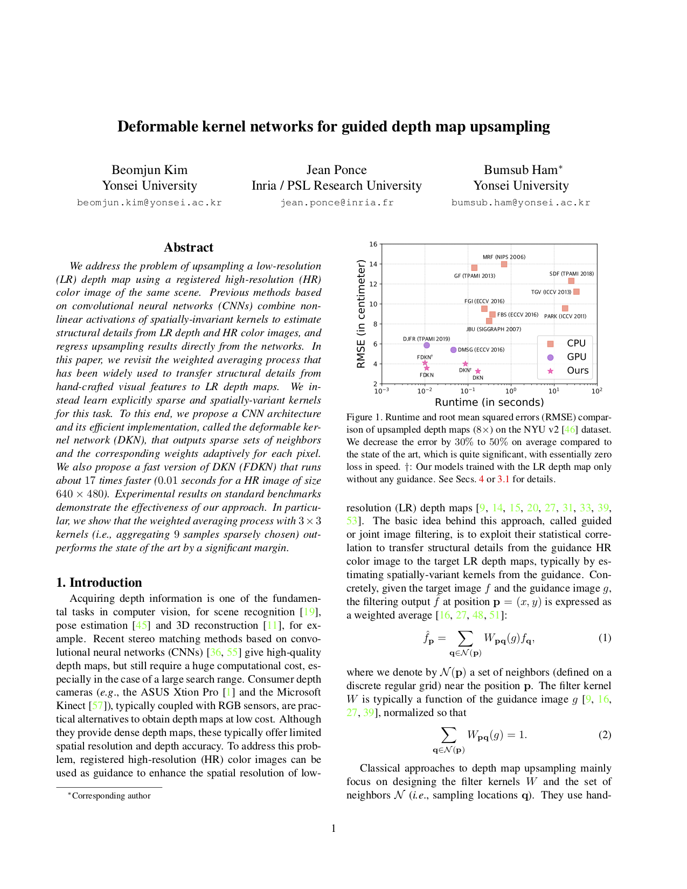

Fig. Qualitative comparison of the state of the art and our model on depth map upsampling (16×). Given a high-resolution color image and a low-resolution depth image from the Sintel dataset, we upsample the depth image using GF, SDF, DJFR and our method.
We address the problem of upsampling a low-resolution (LR) depth map using a registered high-resolution (HR) color image of the same scene. Previous methods based on convolutional neural networks (CNNs) combine nonlinear activations of spatially-invariant kernels to estimate structural details from LR depth and HR color images, and regress upsampling results directly from the networks. In this paper, we revisit the weighted averaging process that has been widely used to transfer structural details from hand-crafted visual features to LR depth maps. We instead learn explicitly sparse and spatially-variant kernels for this task. To this end, we propose a CNN architecture and its efficient implementation, called the deformable kernel network (DKN), that outputs sparse sets of neighbors and the corresponding weights adaptively for each pixel. We also propose a fast version of DKN (FDKN) that runs about 17 times faster (0.01 seconds for a HR image of size 640 × 480). Experimental results on standard benchmarks demonstrate the effectiveness of our approach. In particular, we show that the weighted averaging process with 3 × 3 kernels (i.e., aggregating 9 samples sparsely chosen) outperforms the state of the art by a significant margin.
|  |
B. Kim, J. Ponce, B. Ham Deformable kernel networks for guided depth map upsampling [Paper] [Code] |
TBD